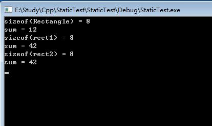

C/C++ static关键字
撰写于 2018-05-29 修改于 2018-05-30 分类 C/C++
static可用在面向对象和面向过程的程序设计中，作用也不大相同，首先说明一下在面向过程中作用和使用方式。
C/C++内存分布
先看一下，一个可运行的C/C++程序中，内存是如何分布的。
全局数据区: 存放全局变量和静态全局变量，初始化的全局变量和静态变量在一块区域，未初始化的全局变量和静态变量放在一块区域。整个程序结束，才会释放。
堆区: 存放程序员分配并手动释放的区域，像malloc(c), new(c++)
栈区: 由编译器自动分配释放，像局部变量，函数参数等等。会随着作用域结束而释放空间
代码区
面向过程中的static
在面向过程的中，static是用来修饰变量和函数的，大致的作用就是隐藏函数和变量。
修饰全局变量
static修饰的全局变量就是静态全局变量，那跟普通的全局变量有什么区别呢？先说一下在同一个文件里面的区别
- 同文件的全局变量和静态全局变量
看一下如下源码:1234567/* int i = 1 */static int i = 1;int foo(){i += 1;return i;}
上面的代码，无论是全局变量，还是静态全局变量，调用foo()后，结果都是相同的，那就意味着，在同文件中，全局变量和静态全局变量的作用都是一样的，都可以在文件中共享。
- 不同文件的全局变量和静态变量
不同文件中的全局变量和静态变量差别很大，先看一个示例：
以上代码编译可以通过，但是运行就会报错：无法解析的外部符号 “int i” 。也就是说在 b.c 中获取不到在 a.c 中定义的静态全局变量，而且如果在 b.c 中在定义一个 int i = 20; 是不会报错的。所以可以总结一下两点：
- 1). 静态全局变量只能在同文件中使用，不用被其他文件使用。
- 2). 其他文件可以定义相同名字的变量，不会发生冲突。
如果替换成全局变量，就可以正确编译运行。全局变量可以被其他任意声包含它文件使用，没有限制。
- 静态全局函数和普通全局函数
static修饰的全局函数和静态全局变量的作用效果是一样的。也是只能在本文件中使用，不用被其他文件使用。不再赘述，直接举个例子：12345678910111213/* 源文件: a.c *//* void fn() */static void fn(){printf("this is a static func in a")}/* 源文件: b.c */extern void fn();int main(void){fn();return 0;}
编译依旧可以通过，运行报错: 无法解析的外部符号 “int __cdecl fn(void)” 。
注：extern 在此处的作用是：此处只是声明，函数的实现是其他文件中定义的！
- 静态局部变量和普通局部变量
是的，static同样可以修饰局部变量，基本上就是函数内定义的的静态局部变量，跟普通的局部变量有什么区别呢？通过上面介绍的内存分布可以知道，局部变量的内存是在栈的分配的，随着函数或者代码块的执行结束，就自动释放掉了。但是静态变量是在全局数据区分配的，并不会随着函数执行结束而释放掉，存在整个程序运行期间。那究竟是什么运行的呢？- 1). 声明在函数的静态局部变量，只会被初始化一次，并且可以保存数值，直到下次赋新值
- 2). 从某种意义上来说，这个静态局部变量只属于这个函数
- 3). 在函数内定义的静态局部变量只能在该函数内使用，其他的函数无法使用，其他函数也可以定义同名的静态局部变量
来看一段示例：
运行以上代码，可产生这种结果：a: 9, a: 8, a: 7…，可以看出 a 只被初始化了一次，以后的每次的调用 fn()，就会自动跳过 static int a = 10;，使用上次保存的值，进行下面的操作。而局部变量每次都会初始化。全局变量的话，就不再仅受函数的控制，给程序的维护带来不便！
面向对象中的static
在OO中，static主要是用来修饰成员变量和成员函数的。
静态数据成员
类的普通数据成员在每个对象里面都有一份，单独存放，互不相干。但是static修饰的静态成员变量是仅有一份的，只为类所有，所有对象共享。所以静态成员变量叫做类变量，普通成员变量叫实例变量，看一下的代码：
运行结果如下：

可以看出，静态成员变量并不占用 Rectangle 的内存空间，因为静态成员变量是在__全局数据区(静态区)分配的。而且静态成员变量只分配一次存储空间，只被初始化一次，所以 s_snum 可以保持数值不变，直到下次赋值。
也就是说，你每new一个Rectangle，并不会为static int s_sum的构建一份内存拷贝，它是不管你new了多少Rectangle的实例，因为它只与类Rectangle挂钩，而跟你每一个Rectangle的对象没关系。
注：静态数据成员定义时要分配空间，所以不能在类声明中定义。int Rectangle::s_snum = 0;就是在定义静态数据成员。
静态成员函数
类的静态成员函数跟静态成员变量是一样的，上面的例子中已经有体现。可以使用类名访问，也可以是用实例访问。静态成员函数的特点：
- 1.静态成员之间可以相互访问，包括静态成员函数访问静态数据成员和访问静态成员函数;
- 2.非静态成员函数可以任意地访问静态成员函数和静态数据成员;
- 3.静态成员函数不能访问非静态成员函数和非静态数据成员;
- 4.调用静态成员函数，可以用成员访问操作符(.)和(->)为一个类的对象或指向类对象的指针调用静态成员函数,也可以用类名::函数名调用(因为他本来就是属于类的，用类名调用很正常)
很重要的一点：
普通的成员函数一般都隐含了一个this指针，this指针指向类的对象本身，因为普通成员函数总是具体的属于某个类的具体对象的。通常情况下，this是缺省的。如函数fn()实际上是this->fn()。但是与普通函数相比，静态成员函数由于不是与任何的对象相联系，因此它不具有this指针。从这个意义上讲，它无法访问属于类对象的非静态数据成员，也无法访问非静态成员函数，它只能调用其余的静态成员函数。
上面的一点也引出了一个面试题：const 和 static能同时修饰一个成员函数吗？
答案是：不能，因为const修饰的函数，是不能修改成员变量的值？那C++是怎么做的呢？会把传入的this指针加const修饰，但是static又要求不能有this指针，所以是冲突的！